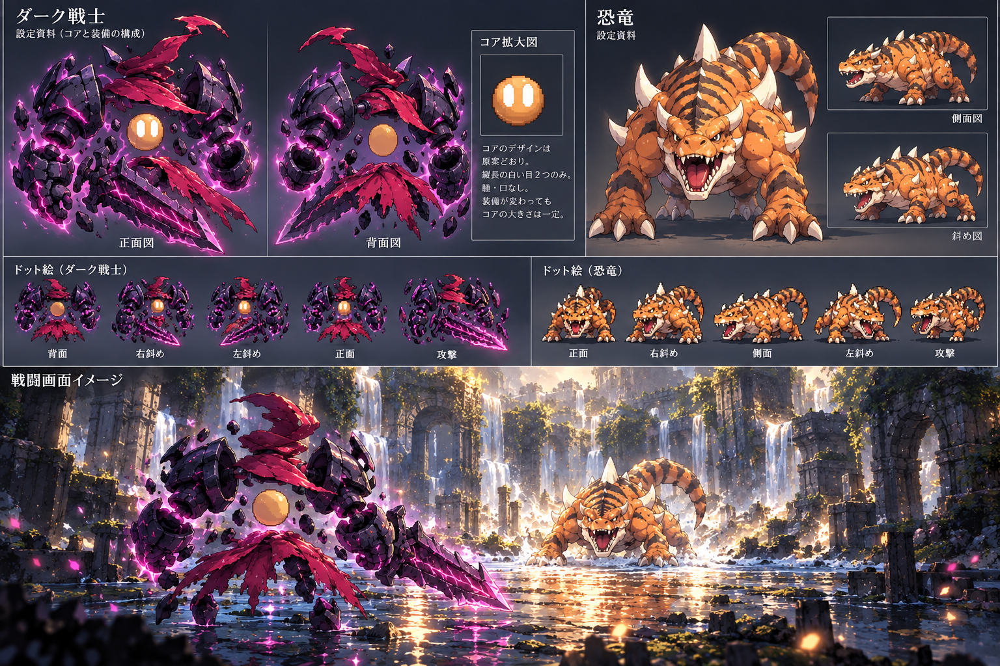

採用画の素材受入
原画と切り出し素材を読み込み中
剣1振りは制作素材待ち。以下は原画の可視部分を切り出した実素材で、完成モーションではありません。

原画 → 透過切り出し → 共通2:1ドット化
剣1振りを止めている欠落
背面図の下布が剣の根元を覆い、握りと柄の接続を抽出できません。攻撃図は小さく、振りかぶりで見える上腕・前腕・手首の裏面と剣の別角度が不足しています。旧v6やコード補描で埋めていません。
7キー姿勢の受入枠
- 構え
- 溜め
- 振りかぶり
- 命中
- 斬り抜き
- 反動
- 戻り
素材が揃うまで、欠落したキー姿勢を切り出し回転で完成扱いにしません。保存・戦闘・報酬への書込みはありません。